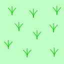
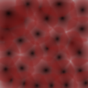
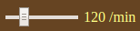
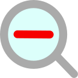
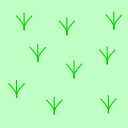
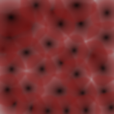

|  |  | |
| Flat | Obstacled | Muddy |
The figure below shows an example display image of the race viewer.
On the top is the control panel with several buttons and a slider for playback control. The next row is the race state panel that shows a summary of the race state. The race course is shown at the bottom.
The control panel at the page top contains a number of buttons and a slider, as shown below. Their functions are described below.
Clicking on the button
shows a dialog to select a log file of a race of SamurAI Jockey
2018 game. Log files are generated by SamurAI Jockey
Official system. You can find an example log file
in samples/sample.racelog in the distribution of
SamurAI Jockey 2018 system.
On loading a race log file, the state of the race before its start is displayed in the race state panel and the race course display.
When is displayed on the button, the race replay is either yet to start or paused temporarily. Clicking the button will start or resume the replay.
When is displayed on the button, the replay is on-going. Clicking the button will pause the replay.
Playback will automatically stops at the end of the race.
Buttons and are stepping buttons. Clicking them single-steps the race state shown backward and forward, respectively.
Clicking the button restores the race state displayed to its start.
The slider in the control panel  is for controlling the speed of the playback. Moving the slider to the left/right will slow down/speed up the playback. The current speed is shown in terms of steps per minute on the right.
Clicking the magnifying glass buttons and  zooms up and down the race course display.
When the whole race course can be displayed at a time, the selector right to the label "Show:" can be used to set the viewport. Options and their functions are as follows.
Clicking the button shows the help page in Japanese. You can find a link to this English page on its top.
The following keyboard shortcuts are also available.
| key | function | key | function | key | function |
|---|---|---|---|---|---|
s | Start/Stop | + | Zoom Up | ↑ | Scroll Above |
r | Rewind | − | Zoom Out | ↓ | Scroll Down |
f | Step Forward | v | Change Viewport | ← | Scroll Left |
b | Step Backward | → | Scroll Right |
The race state panel shows a race state summary.
Next to the leftmost clock icon, the current step number is displayed.
Names and the current positions (the coordinates of the square players are on) of two players are displayed next. Red and blue colors indicate the player 0 and the player 1, respectively. When a player has finished the race, its goal time is displayed in place of its position.
The race course display shows the kinds of squares in the race course, the current positions and trajectories of two players, and the moves instructed at the current step.
The whole race course is displayed on the right while the part of interest of the course is displayed on the left magnified.
|  |  | |
| Flat | Obstacled | Muddy |
The kinds of squares in the race course are indicated as shown in the figure on the right hand side. Logos of the event organizer and the sponsors may be overlaid on obstacled squares, possibly spanning over a number of them.
Any squares beyond vision limit on the upper side of the race course display are tinted white.
The start line is shown in red, and the finish line in green.
Players' positions and their current directions are indicated with red (for the player 0) and blue (for the player 1) triangles.
Trajectories of players, i.e., the paths players have taken, are shown with small disks and polygonal lines of respective colors. For the steps in which moves going off course and/or collisions made the players stop, the instructed moveline is indicated as broken lines.